Research
The neural mechanisms of natural intelligence
We study the neural solutions evolution has produced, during the behaviors they evolved to serve, with the precision of modern systems neuroscience.
01 The Approach
A modern neuroethological strategy for a mechanistic age.
General neural computations are best understood in the context of the natural behaviors a nervous system evolved to subserve.
Both intra- and inter-brain cortical activity differ markedly between naturalistic and task-based conditions.
Neuroethology provides the conceptual strategy: begin with evolved behaviors and capacities. Neurotechnology provides the experimental power: wireless recordings, imaging, behavioral tracking, and causal tools. NeuroAI provides the analytical and modeling framework needed to uncover principles from rich, naturalistic data.
Together, these allow the study of natural behavior with full experimental rigor: in fully monitored, human-free environments, in the lab or outdoors, where single or multiple bats behave naturally and without constraint.
02 The Experimental System
A bat’s life, end to end.
The Egyptian fruit bat roosts socially in densely populated caves, commutes solo between sites, and forages nocturnally, independently and collectively. Its behaviors span every scale: social communication at centimeters, foraging at meters, commuting up to hundreds of kilometers.
Long-lived (25–40 years) and naturally social, these bats combine 3D flight, echolocation, and a dedicated vocal communication system used exclusively for social interaction: a repertoire of natural intelligence in one mammal.
Chosen for the questions they make possible.
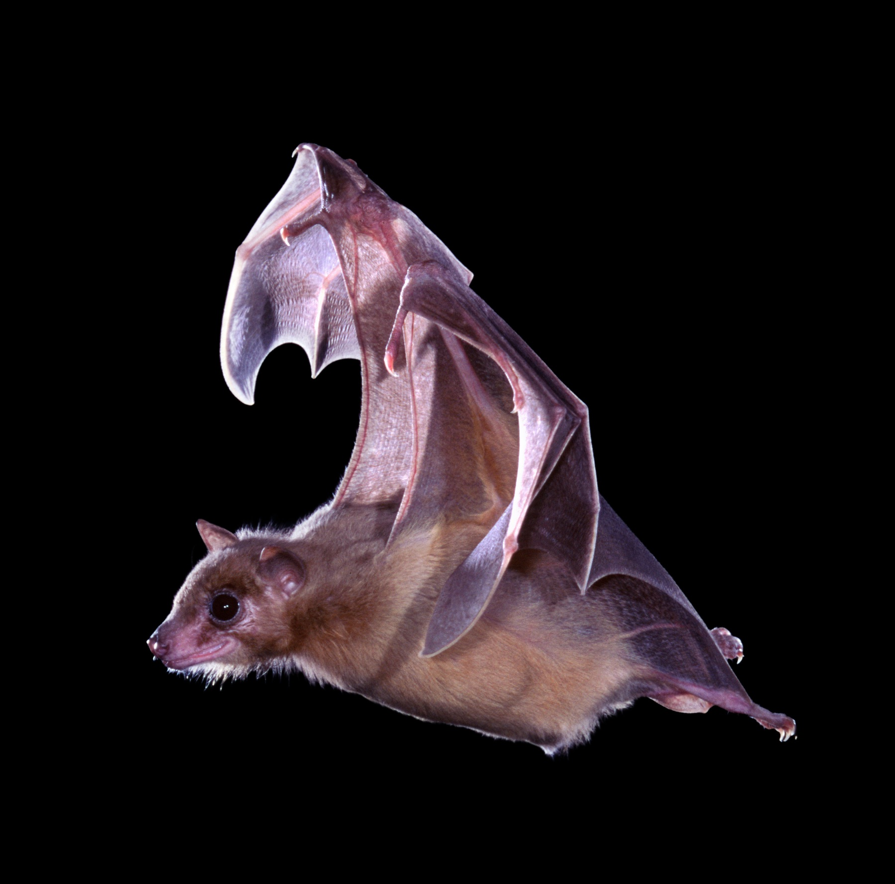
Rousettus aegyptiacus in flight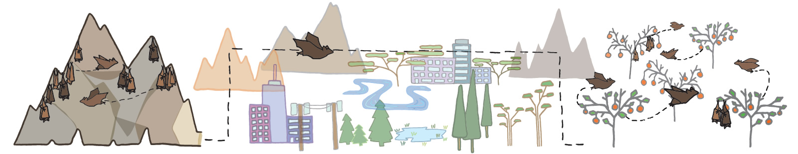
03 Lab & Field
Two arenas: the flight room and the open sky.
Our experiments run both in indoor flight rooms and at outdoor field stations, where the same questions are asked under the open sky, at natural scales and in natural conditions.
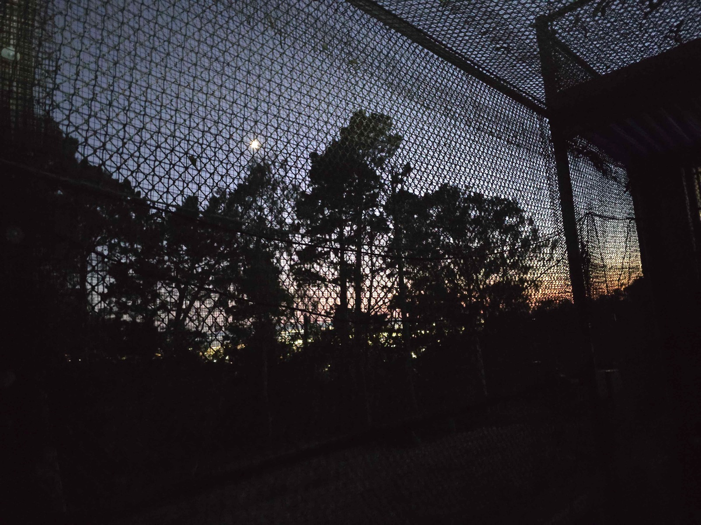
04 The Toolkit
Tools that follow the behavior.
Natural behavior places unusual demands on neuroscience: the measurement must follow the animal, rather than forcing the animal to conform to the measurement. The question comes first: the model organism, experiment, and technology follow. We build or adapt what each question requires, without sacrificing the behavior. Each time a question demanded more, a new capability entered the toolkit. Every tool was born of a single question, and most now serve many. A brief history:
Spatial Social Communication Motor All behaviorscolor = the behavior that first called for it
2011
Tethered recordings in crawling Egyptian fruit bats
The origin: tethered neural recordings opened the study of place cells and grid cells in freely moving Egyptian fruit bats. Yartsev et al., Nature, 2011 →
2013
Wireless electrophysiology in flight
Born of the desire to record from the hippocampus of flying bats: wireless recordings enabled the discovery of 3D place cells. Yartsev & Ulanovsky, Science, 2013 →
2015Founding milestone
The NeuroBat Lab opens at UC Berkeley
The night shift begins, guided by a single principle: start with the behavior, then build the tools to follow the brain.
2019–2021
Multi-animal wireless recordings
New methodologies for simultaneous wireless recordings across bats, first in interacting pairs, then across entire social groups, enabled the study of neural dynamics both within and across the brains of freely socializing animals. Zhang & Yartsev, Cell, 2019 →Rose et al., Science, 2021 →
2021
Automated, human-free environments
Fully automated flight rooms allowed experiments during human-free, spontaneous behavior, monitored continuously and without interference. Genzel & Yartsev, J. Neurosci. Methods, 2021 →Dotson & Yartsev, Science, 2021 →
2022
Wireless calcium imaging
Establishing calcium-indicator expression and wireless imaging in freely flying bats, enabling the study of the stability of the hippocampal code. Liberti et al., Nature, 2022 →
2024
Comparative genomics & machine learning
Machine-learning models over newly sequenced mammalian genomes traced the convergent evolution of vocal learning, connecting the capacities of our model system, the Egyptian fruit bat, to specific proteins and regulatory elements. Wirthlin et al., Science, 2024 →
2025
Large-scale neural recordings using Neuropixels in flight
Hundreds, to soon thousands, of channels recorded wirelessly in flight, opening a new era of studying population dynamics at scale in bats. Forli et al., Nature, 2025 →
2026
NeuroAI & markerless tracking
Machine-learning tracking of full-body kinematics during free flight met the motor cortex: dexterous flight, decoded wingbeat by wingbeat. Styr et al., bioRxiv, 2026 →
2026
Event cameras & voltage imaging
Ultrafast, frame-free imaging of neural dynamics, on the path toward wireless voltage imaging in flight. Forli, Kasuba et al., Current Biology, 2026 →
20??
To be continued
New questions may require new capabilities. We are ready to build them.
2011
Tethered recordings in crawling Egyptian fruit bats
The origin: tethered neural recordings opened the study of place cells and grid cells in freely moving Egyptian fruit bats. Yartsev et al., Nature, 2011 →
2013
Wireless electrophysiology in flight
Born of the desire to record from the hippocampus of flying bats: wireless recordings enabled the discovery of 3D place cells. Yartsev & Ulanovsky, Science, 2013 →
2015Founding milestone
The NeuroBat Lab opens at UC Berkeley
The night shift begins, guided by a single principle: start with the behavior, then build the tools to follow the brain.
2019–2021
Multi-animal wireless recordings
New methodologies for simultaneous wireless recordings across bats, first in interacting pairs, then across entire social groups, enabled the study of neural dynamics both within and across the brains of freely socializing animals. Zhang & Yartsev, Cell, 2019 →Rose et al., Science, 2021 →
2021
Automated, human-free environments
Fully automated flight rooms allowed experiments during human-free, spontaneous behavior, monitored continuously and without interference. Genzel & Yartsev, J. Neurosci. Methods, 2021 →Dotson & Yartsev, Science, 2021 →
2022
Wireless calcium imaging
Establishing calcium-indicator expression and wireless imaging in freely flying bats, enabling the study of the stability of the hippocampal code. Liberti et al., Nature, 2022 →
2024
Comparative genomics & machine learning
Machine-learning models over newly sequenced mammalian genomes traced the convergent evolution of vocal learning, connecting the capacities of our model system, the Egyptian fruit bat, to specific proteins and regulatory elements. Wirthlin et al., Science, 2024 →
2025
Large-scale neural recordings using Neuropixels in flight
Hundreds, to soon thousands, of channels recorded wirelessly in flight, opening a new era of studying population dynamics at scale in bats. Forli et al., Nature, 2025 →
2026
NeuroAI & markerless tracking
Machine-learning tracking of full-body kinematics during free flight met the motor cortex: dexterous flight, decoded wingbeat by wingbeat. Styr et al., bioRxiv, 2026 →
2026
Event cameras & voltage imaging
Ultrafast, frame-free imaging of neural dynamics, on the path toward wireless voltage imaging in flight. Forli, Kasuba et al., Current Biology, 2026 →
20??
To be continued
New questions may require new capabilities. We are ready to build them.
05 The Questions
From one valley to a range of peaks.
The research program as one landscape: every peak is a selected paper, elevation is the year, color is the question. The oldest ground, in the front-left of the landscape, is how the brain maps space, and it is still rising; around it the questions grew into social behavior, communication, and motor control. The gold map pin marks the lab’s 2015 founding, and the gold contour marks that elevation: everything above it came after. The territories are for illustration only: real behavior does not follow borders, and neither do we. That is why peaks can belong to more than one territory. One territory is deliberately not drawn: neurotechnology is central to every paper, so it belongs to the whole landscape; its story is the toolkit above. Hover a territory name for the question, or any peak for the paper; each one tells its story just below the landscape:
Spatial Social Communication Motor color = the question · elevation = the year · gold contour = the 2015 founding of the NeuroBat Lab
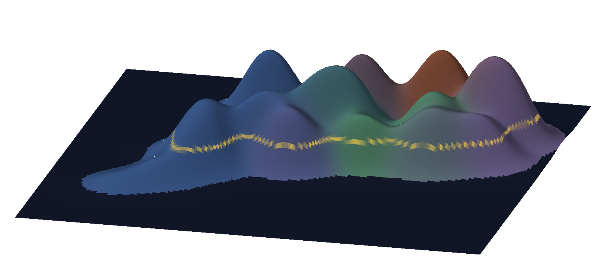
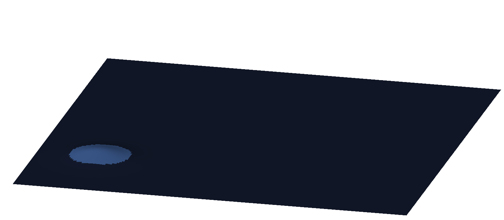
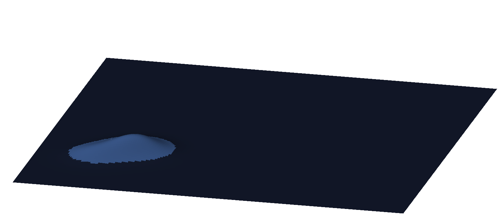
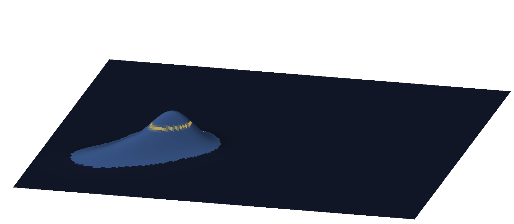
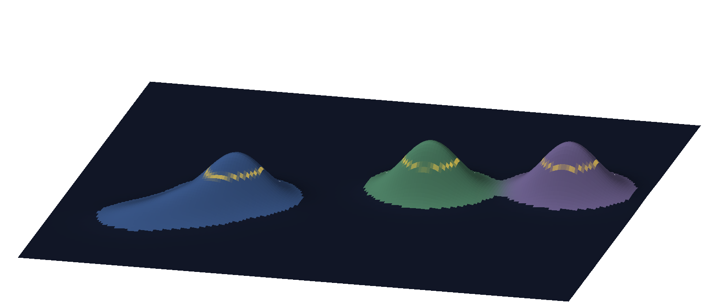
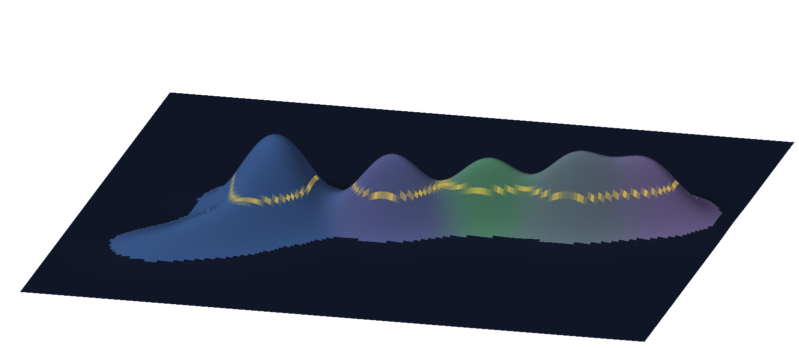
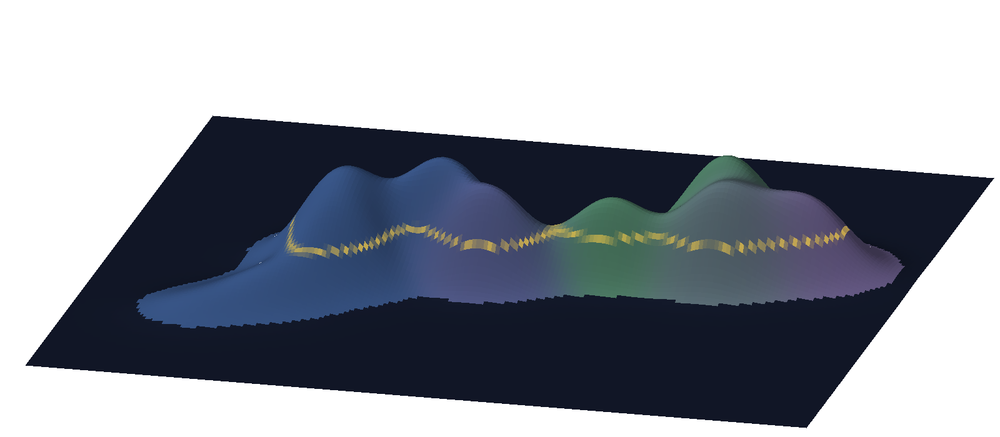
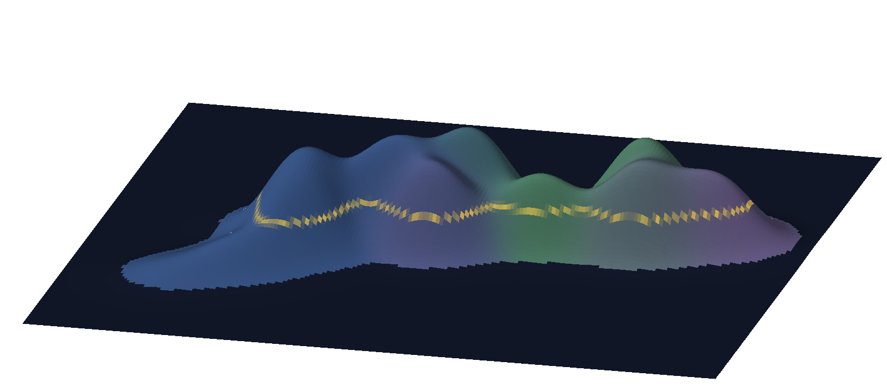
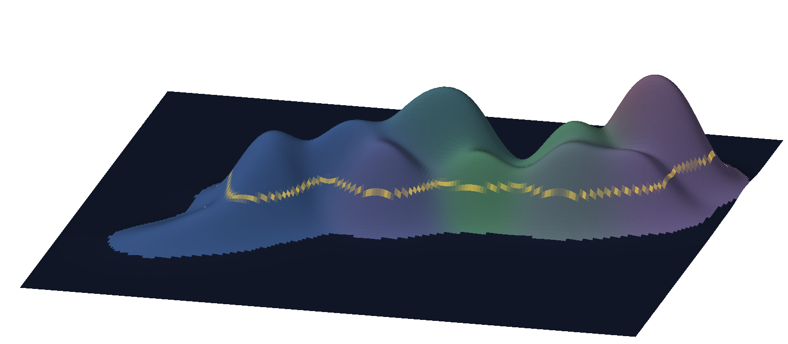
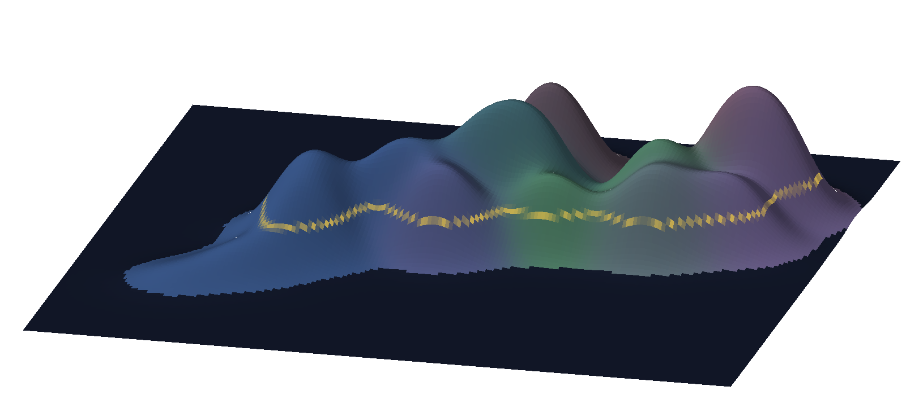
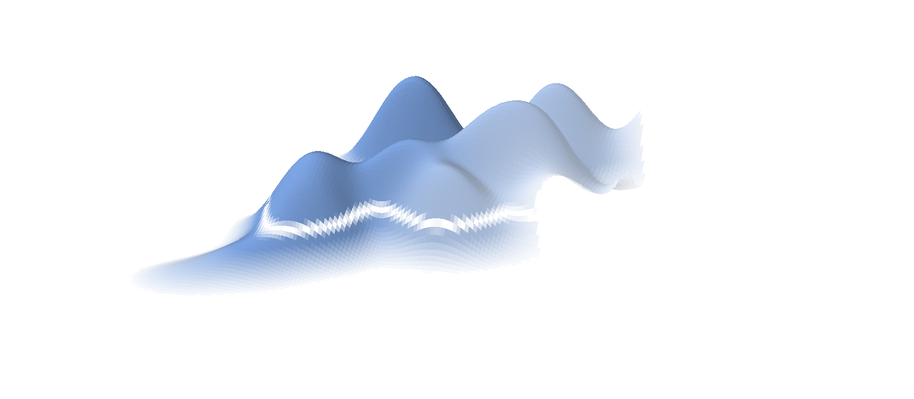
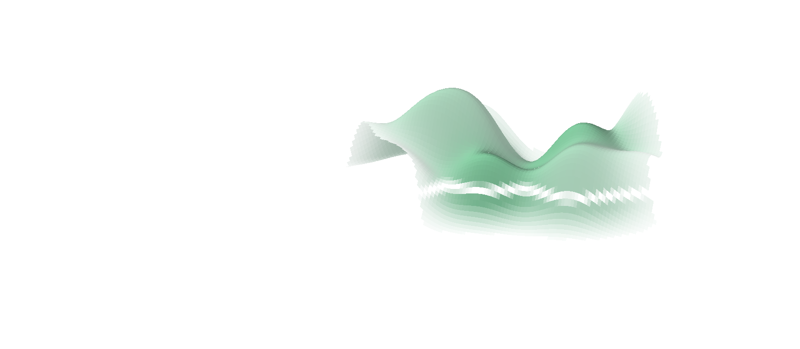
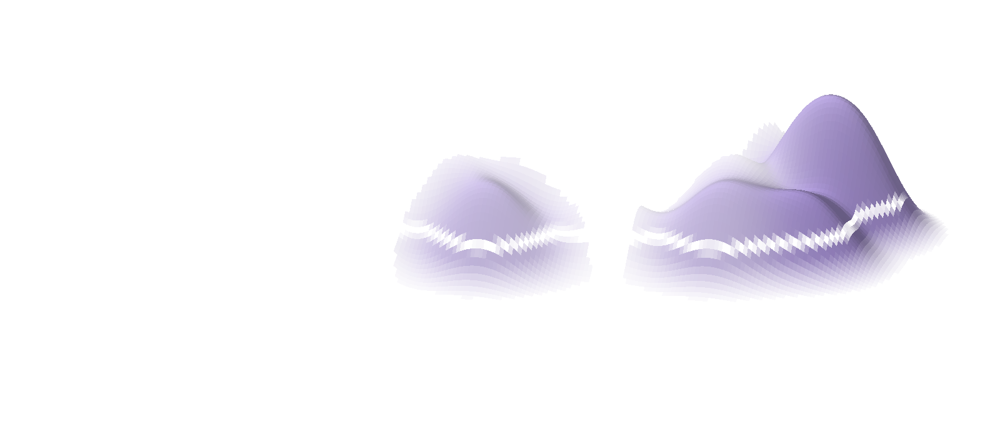
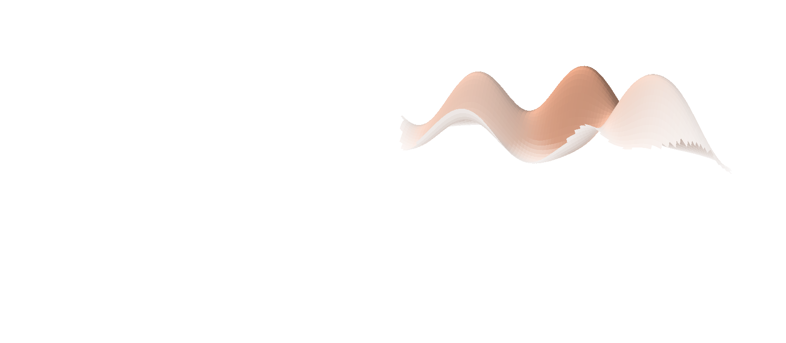
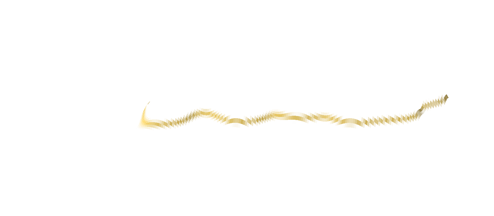
Research domainsTime (years)20112026at UC Berkeley
2011 · Spatial · Medial entorhinal cortex
Grid cells in the medial entorhinal cortex
Grid cells exist in the bat entorhinal cortex without continuous theta oscillations, arguing against oscillatory interference models of how the brain's spatial map is generated. Yartsev et al., Nature, 2011 →
2013 · Spatial · Hippocampus
Three-dimensional space in the hippocampus
Wireless recordings from freely flying bats reveal hippocampal place cells with confined three-dimensional firing fields, encoding volumetric space through a uniform, nearly isotropic rate code without theta rhythmicity. Yartsev & Ulanovsky, Science, 2013 →
2015Founding milestone
The NeuroBat Lab opens at UC Berkeley
The trailhead. The gold contour along the foot of the landscape marks this elevation: everything above it was built since. Natural behavior is not generated by one brain area or one neural system, so from here the terrain rises everywhere at once.
2018 · Spatial · Theory · Model
A theory of spatial maps in three dimensions
A hierarchical anti-Hebbian network model accounts for the emergence of three-dimensional place, border, and grid cells, and predicts a previously undescribed spatial cell type: plane cells. Soman et al., Nature Communications, 2018 →
2019 · Social · Frontal cortex, across brains
Neural dynamics across interacting brains
Neural activity in the brains of socially interacting bats is correlated across timescales from seconds to hours, and this inter-brain correlation rises before social interactions begin. Zhang & Yartsev, Cell, 2019 →
2019 · Communication · Vocal system
Vocal plasticity in adulthood
Adult Egyptian fruit bats exposed to broad-band acoustic perturbation modify distinct parameters of their vocalizations, and these changes persist for weeks to months after the noise ceases. Genzel et al., Nature Communications, 2019 →
2021 · Social · Communication · Frontal cortex
Group communication in the frontal cortex
Frontal cortical neurons in freely communicating groups of bats distinguish vocalizations of self from others and among individuals, with interbrain correlations shaped by each bat's social preferences. Rose et al., Science, 2021 →
2021 · Spatial · Hippocampus
The hippocampus beyond the here and now
Hippocampal activity in freely flying bats predominantly encodes positions meters away from the animal's current location, extending backward and forward in time with an emphasis on the future. Dotson & Yartsev, Science, 2021 →
2021 · Spatial · Communication · Sonar · Retrosplenial cortex
The human-free flight room
A human-free, fully automated flight room enables complex natural behaviors in flying bats, with initial recordings revealing retrosplenial neurons that multiplex position, target choice, reward, and visual cues. Genzel & Yartsev, J. Neurosci. Methods, 2021 →
2022 · Spatial · Hippocampus
A stable code for familiar space
A new neurotechnology, wireless calcium imaging in freely flying bats, made it possible to follow the same hippocampal neurons for weeks: the spatial code proved stable, and apparent instability largely reflects variation in the animals’ own flight behavior. Liberti et al., Nature, 2022 →
2022 · Social · Across brains
A mechanism for inter-brain coupling
A single feedback mechanism explains both the fast fluctuations in neural activity differences between interacting brains and the slow covariation in the activity they share. Zhang & Yartsev, eLife, 2022 →
2023 · Spatial · Social · Hippocampus
Navigation as a collective
Multi-animal tracking and wireless recording in freely flying groups, a new capability in itself, revealed hippocampal neurons tuned to conspecific presence, shared locations, individual identities, and the signals broadcast within the group. Forli & Yartsev, Nature, 2023 →
2024 · Spatial · Social · Hippocampus
The experimenter in the room
Hippocampal neurons in bats encode the presence, position, and identity of human experimenters, indicating that researchers themselves shape the neural dynamics of the animals they study: a gentle case for letting animals behave naturally, without a human in the room. Snyder et al., Nature Neuroscience, 2024 →
2024 · Communication · Auditory-vocal system
Auditory feedback and learned vocalizations
A subset of the Egyptian fruit bat vocal repertoire requires auditory feedback to develop, and the affected vocalizations differ between males and females, revealing sexually dimorphic vocal learning. Elie et al., Current Biology, 2024 →
2024 · Communication · Motor · Genomes to motor cortex
The evolutionary roots of vocal learning
Comparative genomics across 215 mammals, anchored by a newly identified vocal motor cortical region in Egyptian fruit bats, implicates convergent losses of motor cortex regulatory elements in vocal learning evolution. Wirthlin^ et al., Science, 2024 →
2025 · Spatial · Motor · Hippocampus
Memory and planning on the wing
Large-scale wireless Neuropixels recordings in flight, a new capability in itself, revealed hippocampal ensembles that replay entire trajectories at rest and sweep ahead of the animal in flight, locked to the wingbeat: memory and planning, tied to the motor rhythm of flight. Forli et al., Nature, 2025 →
2026 · Spatial · Medial entorhinal cortex
A two-dimensional code for a three-dimensional world
Grid cells in freely flying bats preserve a two-dimensional toroidal code that aligns with the planar structure of flight paths, offering a parsimonious solution for navigating three-dimensional space. Qi & Yartsev, bioRxiv, 2026 →
2026 · Motor · Motor cortex
Dexterous movement in the motor cortex
The wing motor cortex of freely flying bats operates in a high-dimensional regime, with sparsely active neurons combining mixed kinematic selectivity and millisecond-precise entrainment to the wingbeat. Styr et al., bioRxiv, 2026 →
20?? · The unclimbed summit
To be continued
The unclimbed summit. Every peak on this landscape began as a question, and the next one is already on the horizon.

The question · Spatial
Navigation in three dimensions, alone and in groups
Hippocampal and entorhinal codes for three-dimensional space, from single neurons to ensemble dynamics: place fields, grid cells, and replay in bats navigating as they would in nature, on the wing, alone or in groups, toward goals of their own choosing.
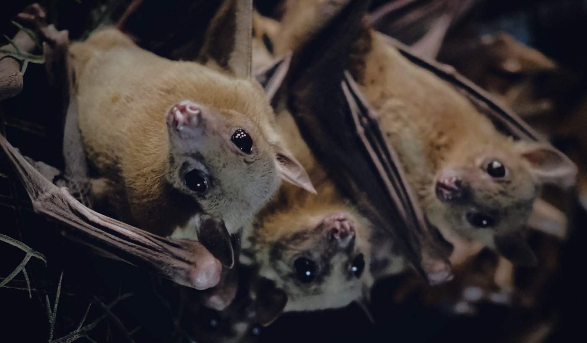
The question · Social
Group sociality, within and across brains
Group social dynamics studied within and across brains: single animals navigating a collective, simultaneous recordings from interacting brains, and the acoustic signals that bind the group.
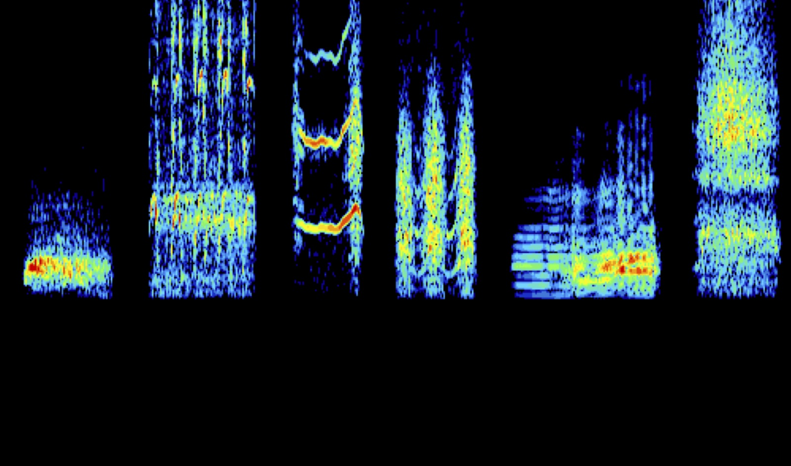
The question · Communication
Communication and sonar
Two acoustic systems, a dedicated social vocal repertoire and lingual echolocation, studied where they carry meaning: within the group and on the wing.
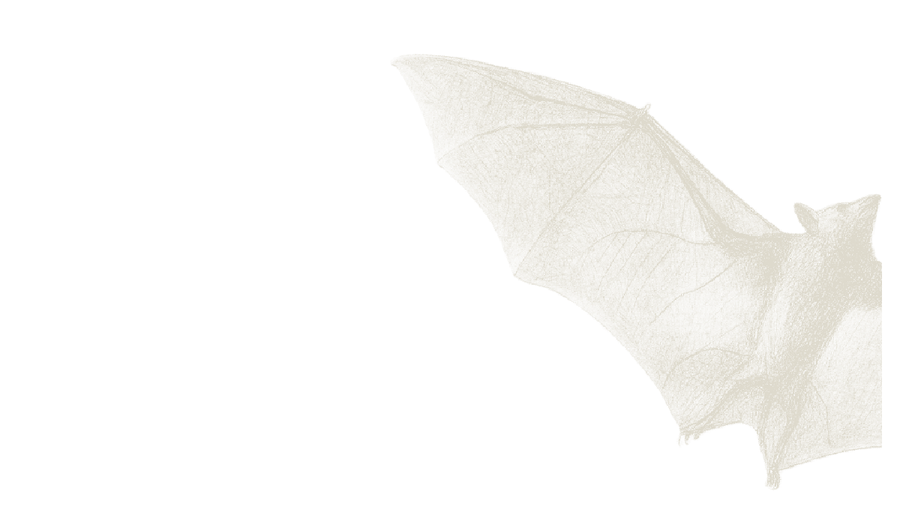
The question · Motor
Movement, and the computations it shapes
How movement and neural computation shape one another: a high-dimensional motor cortical code during free flight, the rhythm of the bat’s wingbeat organizing hippocampal ensemble dynamics, and the motor cortical origins of vocal learning.
The question · Spatial
Navigation in three dimensions, alone and in groups
Hippocampal and entorhinal codes for three-dimensional space, from single neurons to ensemble dynamics: place fields, grid cells, and replay in bats navigating as they would in nature, on the wing, alone or in groups, toward goals of their own choosing.
The question · Social
Group sociality, within and across brains
Group social dynamics studied within and across brains: single animals navigating a collective, simultaneous recordings from interacting brains, and the acoustic signals that bind the group.
The question · Communication
Communication and sonar
Two acoustic systems, a dedicated social vocal repertoire and lingual echolocation, studied where they carry meaning: within the group and on the wing.
The question · Motor
Movement, and the computations it shapes
How movement and neural computation shape one another: a high-dimensional motor cortical code during free flight, the rhythm of the bat’s wingbeat organizing hippocampal ensemble dynamics, and the motor cortical origins of vocal learning.
2011 · Spatial · Medial entorhinal cortex
Grid cells in the medial entorhinal cortex
Grid cells exist in the bat entorhinal cortex without continuous theta oscillations, arguing against oscillatory interference models of how the brain's spatial map is generated.
2013 · Spatial · Hippocampus
Three-dimensional space in the hippocampus
Wireless recordings from freely flying bats reveal hippocampal place cells with confined three-dimensional firing fields, encoding volumetric space through a uniform, nearly isotropic rate code without theta rhythmicity.
2015Founding milestone
The NeuroBat Lab opens at UC Berkeley
The trailhead: the gold contour on the landscape marks this moment, and everything above it was built since.
2018 · Spatial · Theory · Model
A theory of spatial maps in three dimensions
A hierarchical anti-Hebbian network model accounts for the emergence of three-dimensional place, border, and grid cells, and predicts a previously undescribed spatial cell type: plane cells.
2019 · Social · Frontal cortex, across brains
Neural dynamics across interacting brains
Neural activity in the brains of socially interacting bats is correlated across timescales from seconds to hours, and this inter-brain correlation rises before social interactions begin.
2019 · Communication · Vocal system
Vocal plasticity in adulthood
Adult Egyptian fruit bats exposed to broad-band acoustic perturbation modify distinct parameters of their vocalizations, and these changes persist for weeks to months after the noise ceases.
2021 · Social · Communication · Frontal cortex
Group communication in the frontal cortex
Frontal cortical neurons in freely communicating groups of bats distinguish vocalizations of self from others and among individuals, with interbrain correlations shaped by each bat's social preferences.
2021 · Spatial · Hippocampus
The hippocampus beyond the here and now
Hippocampal activity in freely flying bats predominantly encodes positions meters away from the animal's current location, extending backward and forward in time with an emphasis on the future.
2021 · Spatial · Communication · Sonar · Retrosplenial cortex
The human-free flight room
A human-free, fully automated flight room enables complex natural behaviors in flying bats, with initial recordings revealing retrosplenial neurons that multiplex position, target choice, reward, and visual cues.
2022 · Spatial · Hippocampus
A stable code for familiar space
A new neurotechnology, wireless calcium imaging in freely flying bats, made it possible to follow the same hippocampal neurons for weeks: the spatial code proved stable, and apparent instability largely reflects variation in the animals’ own flight behavior.
2022 · Social · Across brains
A mechanism for inter-brain coupling
A single feedback mechanism explains both the fast fluctuations in neural activity differences between interacting brains and the slow covariation in the activity they share.
2023 · Spatial · Social · Hippocampus
Navigation as a collective
Multi-animal tracking and wireless recording in freely flying groups, a new capability in itself, revealed hippocampal neurons tuned to conspecific presence, shared locations, individual identities, and the signals broadcast within the group.
2024 · Spatial · Social · Hippocampus
The experimenter in the room
Hippocampal neurons in bats encode the presence, position, and identity of human experimenters, indicating that researchers themselves shape the neural dynamics of the animals they study: a gentle case for letting animals behave naturally, without a human in the room.
2024 · Communication · Auditory-vocal system
Auditory feedback and learned vocalizations
A subset of the Egyptian fruit bat vocal repertoire requires auditory feedback to develop, and the affected vocalizations differ between males and females, revealing sexually dimorphic vocal learning.
2024 · Communication · Motor · Genomes to motor cortex
The evolutionary roots of vocal learning
Comparative genomics across 215 mammals, anchored by a newly identified vocal motor cortical region in Egyptian fruit bats, implicates convergent losses of motor cortex regulatory elements in vocal learning evolution.
2025 · Spatial · Motor · Hippocampus
Memory and planning on the wing
Large-scale wireless Neuropixels recordings in flight, a new capability in itself, revealed hippocampal ensembles that replay entire trajectories at rest and sweep ahead of the animal in flight, locked to the wingbeat: memory and planning, tied to the motor rhythm of flight.
2026 · Spatial · Medial entorhinal cortex
A two-dimensional code for a three-dimensional world
Grid cells in freely flying bats preserve a two-dimensional toroidal code that aligns with the planar structure of flight paths, offering a parsimonious solution for navigating three-dimensional space.
2026 · Motor · Motor cortex
Dexterous movement in the motor cortex
The wing motor cortex of freely flying bats operates in a high-dimensional regime, with sparsely active neurons combining mixed kinematic selectivity and millisecond-precise entrainment to the wingbeat.
20?? · The unclimbed summit
To be continued
Every peak began as a question; the next one is already on the horizon.
06 Support
Backing ambitious questions.
We are grateful to the organizations that have supported our pursuit of fundamental questions, new experimental systems, and enabling technologies.